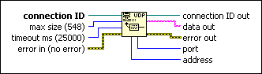

UDP Read Function
Owning Palette: UDP VI and Functions
Requires: Base Development System
Reads a datagram from a UDP socket, returning the results in data out.
The function returns data when it receives any bytes, and waits the full timeout ms only if it receives no bytes.

 Add to the block diagram Add to the block diagram |
 Find on the palette Find on the palette |